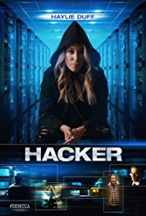
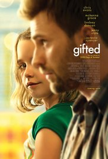

Genres : Drama Release Date: 13 July 1949 (USA) Stars: Alan Ladd, Betty Field, Macdonald Carey Short description : ALAN LADD was the perfect actor for THE GREAT GATSBY, and his performance in this film captures F. Scott Fitzgerald's tragic hero with every nuance, every movement, every hidden torment. Ladd wanted to do this role, although he had his anxieties (as was noted by my friend Geraldine Fitzgerald). Nonetheless, he succeeds splendidly as Gatsby - a definitive characterization that should be seen. Redford had the right stuff, to a large extent, but the Redford-Farrow version is far too overblown with far too many missing, and important, elements in the plot.
Genres :Thriller Updated: 5 January 2017 Stars : Haylie Duff, Craig Stark, Dan Spector Short description:the best film about hackers. if u watch this film you may be interested in hacking. eand actors are better chosen for this film.
Genres: Drama Release Date: 1 June 2017 (Russia) Stars : Cstyle="color:white"hris Evans, Mckenna Grace, Lindsay Duncan Short description: Frank Adler (Chris Evans) is a single man raising a child prodigy - his spirited young niece Mary (Mckenna Grace) in a coastal town in Florida. Frank's plans for a normal school life for Mary are foiled when the seven-year-old's mathematical abilities come to the attention of Frank's formidable mother Evelyn (Lindsay Duncan) whose plans for her granddaughter threaten to separate Frank and Mary. Octavia Spencer plays Roberta, Frank and Mary's landlady and best friend. Jenny Slate is Mary's teacher, Bonnie, a young woman whose concern for her student develops into a connection with her uncle as well. Written by Fox Searchlight Pictures
Genres:Drama | Romance Release Date: 15 January 2009 (Russia) Stars: Will Smith, Rosario Dawson, Woody Harrelson short discription : Haunted by a secret, Ben Thomas looks for redemption by radically transforming the lives of seven people he doesn't know. Once his plan is set, nothing will be able to stop him. At least that's what he thinks. But Ben hadn't planned on falling in love with one of these people and she's the one who will end up transforming him. Written by Happy_Evil_Dude
Home